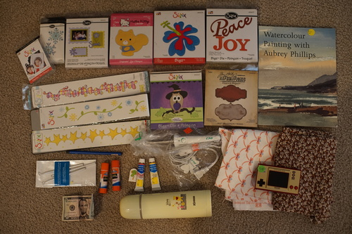

I painted another plumeria for my mom! I'm praying she doesn't check my website. PLEASE if you are my mother, CLOSE THE TAB
I also found an email in my inbox! Thanks saint-images!
"It says «Karl Marx's *obscure abbreviation probably meaning a leather factory*», followed by the serial number, the name of the soviet republic it was made in (Russian SFSR), the name of the quality assurance deparment (probably) and the manufacture date. The factory is so obscure that googling it only returns this particular bag and nothing else. Also it's «Karl Marx's» in a sense that, there's was (and still is) a tradition dating back to the USSR times where you name factories, schools, hospitals and stuff like that, mostly state-owned, in honour of someone, so they named it after Marx to honor him."
you heard it here first guys!! i own a karl marx designer bag! i do have an issue with it so far: the pencil loop holders are exactly large enough to hold a pencil and nothing larger. forget most pens! it is exactly large enough to hold my shitajiki, but i only own one and i want to keep it at my desk
I went on another money spending walk. my watch (who has been continuously asking me to log in to my apple account for over 6 months) says I walked less today than I did at work yesterday. I didnt think I had much of a walking job but I guess I do! luckily most of the stuff i bought was for my mother and will be leaving my own home.
i had no idea Aubrey was a man's name
score!! i found this on the ground
Crimson and Yellow Ochre. it's funny how long it takes them to put out everything.
i was able to hold back from a hello kitty thermos a few months ago but pooh bear was much harder. i think i need to clear out my hydroflask collection that i dont use many of.
oh my gosh i have wanted one of these for doll sewing!!
the ribbon one would make a cute small pouch! and the small leaf print would make a cute fall dress (doll size)!
I found a pile of sizzix dies and my mom has been obsessed with die cutting lately. i asked how much they were and the cashier said 10 cents each so i got them all for my mom. i think I got overcharged but the total came out to $2.92 for a ton of stuff so i'm not even going to complain. It's possible the free items were counted as well. I didn't put the price in for any of these items because of that. i love "lorry"!! i dont need a die though so I'm forcing it on my mother.
all of the erotica/sex/r18 books at the thrift store had been cleared out. well, most of the books had been cleared out. it's hard to tell when this store is going to dump everything in a section.
as I was walking home I saw a sign for a yard sale like half a block away from my house. they didnt really have much but they did have a super mario game and watch marked $10. i walked home, asked ryan if he wanted it, gathered his cash, and offered them $5. they took it.
i dont know why poverty level haggling gives me a rush but it totally does. I hope youre all prepared to see my face on the next printing of "the art of the deal"
i wish they had the zelda one! i want a lil linkie game. maybe i'd actually beat the original linkie no wake up. I was trying on my 3ds for a while but gosh the controls are a pain. i know theres a dungeon i'm going to have to get out paper and pencil to get through. that one was tough to navigate even on the switch!
i seriously need to hurry up and finish ookami. ive been slowly working through it for months now but xenoblade 3 is being released like next week?! it doesnt have a compelling story and it kind of feels it's dragging on.
I read Passion Vol 2 first. This series continues to be weird. Student keeps calling his teacher "sir" despite dating him. A scene shows the student saying 50 yen is significant price difference, and teacher laughs at him for being a child. It really drives it home that these two should not be together. Teacher reveals that he knew what he was getting into the day student raped him on the floor of a classroom, and it was consensual all along.
In the end, it got a bit better. Student graduated high school and so their relationship is no longer illegal. There is a shower sex scene and a valentines day sex scene in the extra story.
Lovely Sick volume 1... has the worst concept out of all of them. Absolutely the most unhealthy relationship! The doctor is lovers with his 18 year old patient, who he is also the legal guardian of. The patient and doctor have been together 5 years. 5 years?! The patient is so whiny and needy and the doctor comes to his every beck and call because he wants the kid to be incapable of anything without him. There is one angry and jealous sex scene and one implied sex scene on the beach.
There is one positive to this manga! The friend and coworker of the doctor, Dr. Kuma, is handsome and does not support this relationship. Let's read his manga!
Our Everlasting Volume 2 was a breath of fresh air. Both of the men are ADULTS. One of them is "straight" but he also has two gay earrings in one ear. Sure. The other is gay and feels very insecure about being in a relationship with a straight man. The straight man is very insecure about his gay boyfriend spending time with another gay man who constantly hits on him. They're both concerned about holding each other back. This leads to drama as you'd expect. There are back to back angry and make up sex scenes as well as one in France. They even get to be gay dads for a few hours.
There is a bonus unrelated short story at the end of an ameteur filmmaker paying his actor in sex.
I can't really say I enjoyed any of these, but Lovely Sick drove me insane. I'm too old for stories like that.
I've decided my ideal yaoi manga traits:
my dudes, i think i may be boring. I would like to see one about 2 rival CEOs destroying each other in public but being lovers in secret. that sounds good. until then, i think i will continue to read manga with exactly 0 sex scenes.
yuri on ice was good and i would appreciate more on that level. I even liked yurikuma a lot and I dont care for yuri at all. i'd say yurikuma is more sexualized but can we get more commitments to love and less sex scenes? someone fill me in if sarazanmai was worth watching now that we're far enough out from the airing hype please!
this is so bad. i like the twinkie pyramid and her reaction to hot cheetos though!
while i was walking around i heard a cover of I Can't Go for That on the radio. i was a little shocked! but now i cant find out who did it. at least i think that was the song??? im so confused.